📚 ¿Prefieres leerlo offline?
Esta lectura también está disponible como archivo EPUB descargable, perfecto para leerlo con calma en un lector electrónico, móvil o tablet.
Sobre este anexo
Det norske året (El año noruego) es un anexo cultural del curso Velkommen til Norge!, pensado como lectura larga complementaria a la Lección 2 — Tall og tid. No contiene ejercicios: está pensado para leer con calma, en el móvil o en un lector electrónico, sin prisa por aprender.
A lo largo de doce capítulos cortos — uno por mes — descubrirás:
- Una palabra noruega intraducible que captura algo único del mes.
- Vocabulario práctico que vas a usar si visitas Noruega en esa época.
- Una tradición o festividad clave para entender la cultura noruega.
Los noruegos viven el año marcado por la luz: cuándo desaparece, cuándo vuelve, qué se hace mientras tanto. Si entiendes su calendario, entiendes medio país.
God lesning! (Buena lectura.)
Januar — Enero
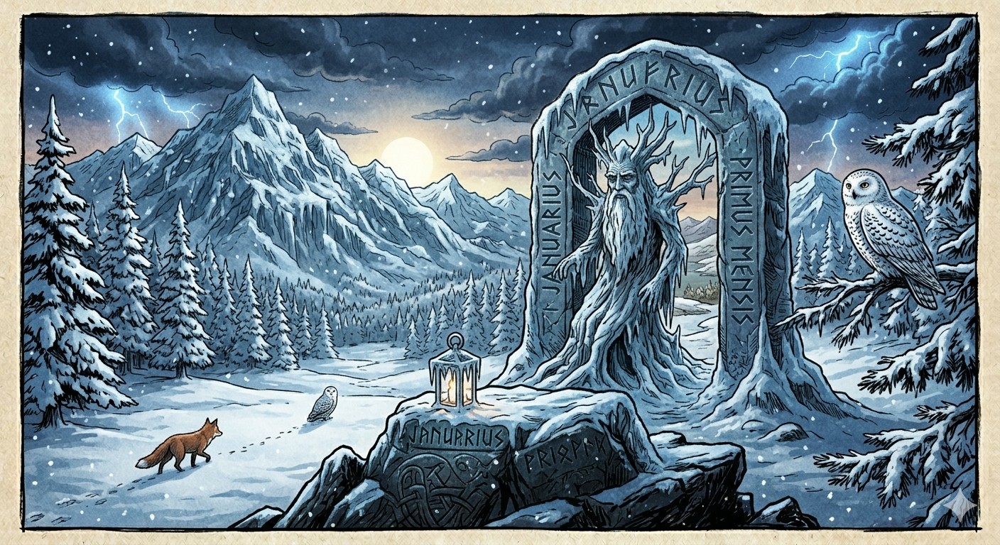
Palabra intraducible: nyttårsforsetter
Literalmente “propósitos de Año Nuevo”. Como en muchas culturas, los noruegos los formulan en enero — pero hay un giro: en encuestas, casi la mitad de los noruegos confiesa que sus nyttårsforsetter tienen que ver con hacer más ejercicio al aire libre. Coherente con un país donde friluftsliv (la vida al aire libre) es prácticamente una religión laica.
Tradición: el 1 de enero es festivo nacional. La mayoría de los noruegos se quedan en casa recuperándose de la nyttårsaften (Nochevieja). En las ciudades, los fuegos artificiales privados han sido restringidos progresivamente: ahora solo los profesionales pueden lanzarlos.
Vocabulario del mes:
- nyttår — año nuevo
- snø — nieve
- kaldt — frío (adjetivo)
- peis — chimenea
- å hvile — descansar
💡 Snø (nieve) y el inglés snow son cognados directos. Y peis es un préstamo del francés pièce, igual que el inglés fireplace.
Februar — Febrero
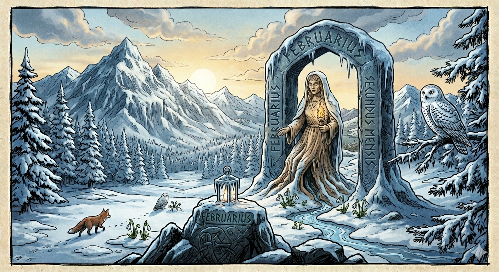
Palabra intraducible: mørketid
“Tiempo oscuro”. En el norte de Noruega, especialmente por encima del Círculo Polar Ártico, el sol no sale durante semanas entre noviembre y enero. En Tromsø, el sol regresa por primera vez sobre el 21 de enero — y los habitantes lo celebran con la soldagen (“día del sol”), saliendo a recibirlo. Febrero es el mes en que la luz vuelve poco a poco, y se nota en el ánimo general.
Tradición: fastelavn, el equivalente noruego al carnaval, se celebra siete semanas antes de Pascua (suele caer en febrero o marzo). El plato estrella es el fastelavnsbolle: un bollo de cardamomo relleno de nata y mermelada que se vende en todas las panaderías.
Vocabulario del mes:
- lys — luz / claro
- sol — sol
- bolle — bollo
- vinter — invierno
- å spise — comer
💡 Vinter / winter y sol / sun: dos cognados claros. Lys significa también “vela” — en una cultura donde la luz escasea medio año, no es casualidad que la misma palabra valga para las dos cosas.
Mars — Marzo
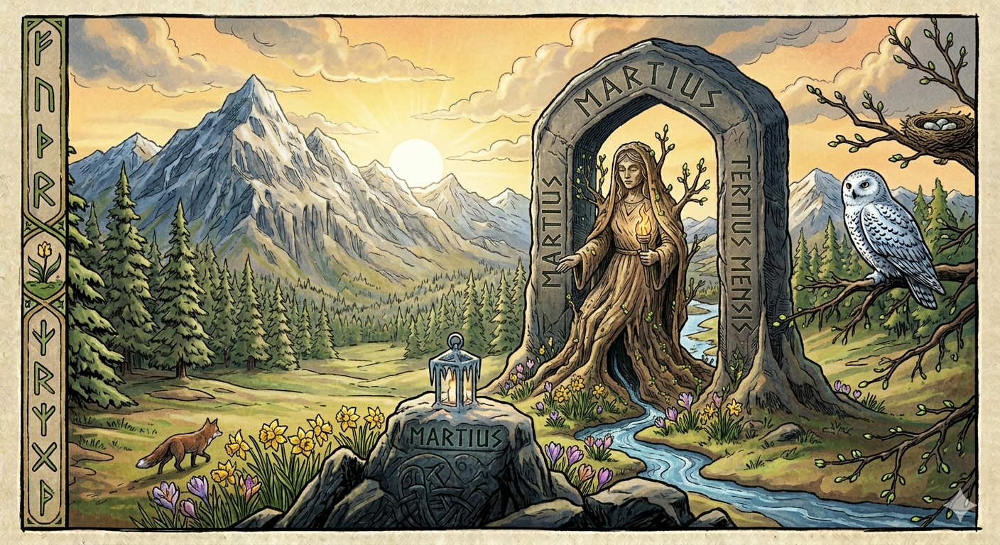
Palabra intraducible: vårtegn
“Señales de primavera”. Los noruegos prestan una atención casi devocional a las primeras señales de que el invierno se acaba: el día en que un pájaro canta, los primeros brotes verdes, el agua que empieza a gotear de los aleros. Hay incluso un registro nacional (gestionado por NRK, la radio pública) donde la gente envía avistamientos de vårtegn desde toda Noruega.
Tradición: vacaciones de invierno (vinterferie). Casi todas las escuelas y empresas dan una semana libre en febrero o principios de marzo, y la mayoría de las familias se van a esquiar. Esquiar en Noruega no es un deporte: es una costumbre nacional.
Vocabulario del mes:
- vår — primavera
- å gå på ski — esquiar (literalmente “ir sobre esquís”)
- fjell — montaña
- hytte — cabaña
- ferie — vacaciones
💡 Å gå på ski contiene tres palabras que ya conoces: å (marca del infinitivo), gå (ir) y ski (la palabra noruega que el inglés tomó tal cual).
April — Abril
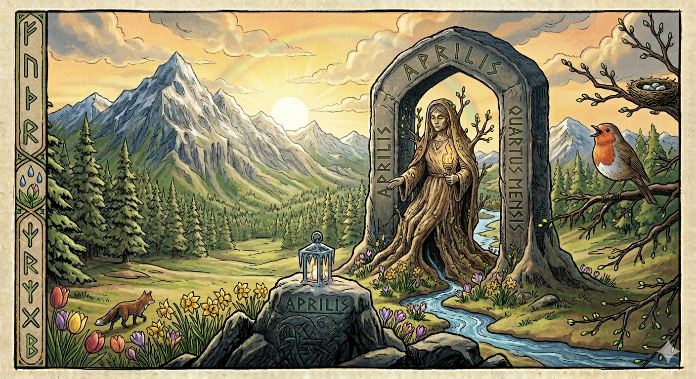
Palabra intraducible: påskekrim
“Crimen de Pascua”. Una tradición noruega genuinamente extraña: durante la Semana Santa, los noruegos consumen novelas y series policiacas en masa. Las editoriales publican libros de crímenes especialmente para Pascua, las cadenas de televisión emiten maratones, incluso las cajas de leche llevan impresos relatos cortos de misterio. Nadie sabe muy bien por qué empezó, pero es una tradición sólida desde 1923, cuando dos escritores publicaron una novela de suspense titulada Bergenstoget plyndret i natt (“El tren de Bergen, asaltado anoche”) con una campaña tan agresiva que la gente la confundió con noticias reales.
Tradición: påske (Pascua) es una semana de vacaciones. Las familias que tienen hytte (cabaña) se van al campo a esquiar — paradójicamente, abril sigue siendo época de esquí en las montañas noruegas. Otros se quedan en casa con sus påskekrim.
Vocabulario del mes:
- påske — Pascua
- bok — libro
- å lese — leer
- appelsin — naranja (la fruta clásica de Pascua noruega)
- kvikklunsj — el chocolate de Pascua por antonomasia (marca registrada Freia)
💡 Bok / book, å lese / to read (en alemán lesen), appelsin / orange — sí, appelsin viene del alemán Apfelsine, “manzana de China”, el nombre antiguo de la naranja en el norte de Europa.
Mai — Mayo
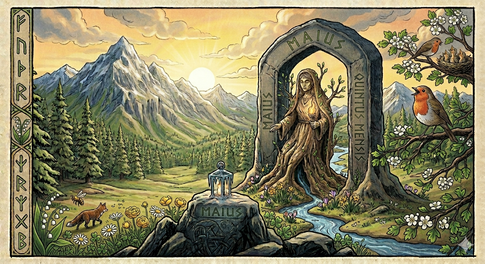
Palabra intraducible: bunad
El traje tradicional regional. Cada zona de Noruega tiene su propio bunad, con bordados, colores y joyas distintivas. No es un disfraz: es una prenda cara (entre 30.000 y 80.000 NOK, unos 3.000-8.000 €), que se hereda, se ajusta y se mantiene durante toda la vida. Las niñas reciben su primer bunad en la confirmación, y lo usan después en cada gran ocasión: bodas, 17. mai, graduaciones.
Tradición: 17. mai, el día nacional, conmemora la firma de la Constitución de 1814. Es la fiesta más importante del año: desfiles infantiles (no militares, una rareza europea), banderas en cada balcón, helado e pølse (perritos calientes) sin medida, y todo el mundo vestido con su bunad. Si te invitan a uno, ve. Es la mejor lección de cultura noruega que puedes recibir.
Vocabulario del mes:
- flagg — bandera
- tog — desfile (también “tren”)
- pølse — salchicha, perrito caliente
- iskrem — helado
- å feire — celebrar
💡 Flagg / flag y iskrem / ice cream son cognados transparentes. Cuidado con tog: dependiendo del contexto significa “tren” o “desfile”.
Juni — Junio
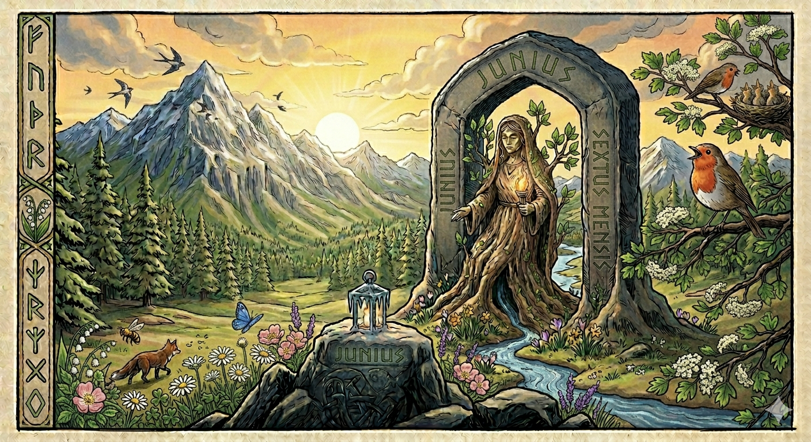
Palabra intraducible: midnattsol
“Sol de medianoche”. En el norte de Noruega, durante varias semanas en torno al solsticio de verano, el sol no se pone. Literalmente. En Tromsø, la midnattsol dura desde el 20 de mayo hasta el 22 de julio. En el cabo Norte, el sol describe un círculo en el cielo sin tocar nunca el horizonte. Es la compensación del mørketid invernal — y la razón por la que los noruegos viven el verano con una intensidad casi desesperada.
Tradición: Sankthansaften (Noche de San Juan), el 23 de junio. Se encienden hogueras en las playas y junto a los fiordos, se canta, se come al aire libre. No es festivo oficial, pero socialmente es una de las noches más esperadas del año.
Vocabulario del mes:
- sommer — verano
- strand — playa
- bål — hoguera
- grilling — barbacoa (en noruego se usa el verbo inglés en infinitivo, todo junto)
- sein kveld — atardecer tardío
💡 Sommer / summer y strand / strand (literalmente “orilla” en inglés moderno, “playa” en alemán). El verbo å grille (asar a la parrilla) es préstamo directo del inglés to grill.
Juli — Julio
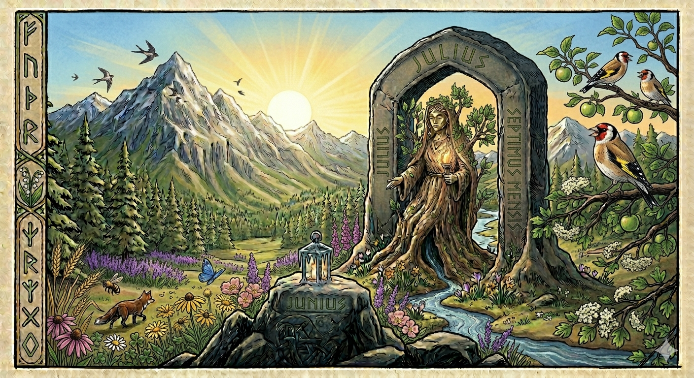
Palabra intraducible: fellesferie
“Vacaciones colectivas”. En Noruega, durante las tres semanas centrales de julio, el país entero se va de vacaciones a la vez. Las grandes empresas cierran, muchos servicios reducen horarios, las ciudades se vacían y las cabañas en el campo se llenan. Es lo más parecido a un cierre nacional voluntario. El gobierno incluso legisló la idea: el derecho a tomar las vacaciones en bloque está protegido por ley.
Tradición: hyttekos. La actividad-tradición consiste, simplemente, en pasar tiempo en la hytte (cabaña): leer, caminar, recoger bayas, pescar, mirar el agua del fiordo. Es deliberadamente lento. Y deliberadamente desconectado: muchas cabañas noruegas siguen sin tener WiFi por elección.
Vocabulario del mes:
- å bade — bañarse
- vann — agua (también “lago”)
- båt — barco
- å gå tur — pasear (literalmente “ir vuelta”)
- bær — bayas
💡 Bær contiene una de las tres letras especiales del noruego: la æ. Compárala con el inglés berry — mismo origen germánico.
August — Agosto
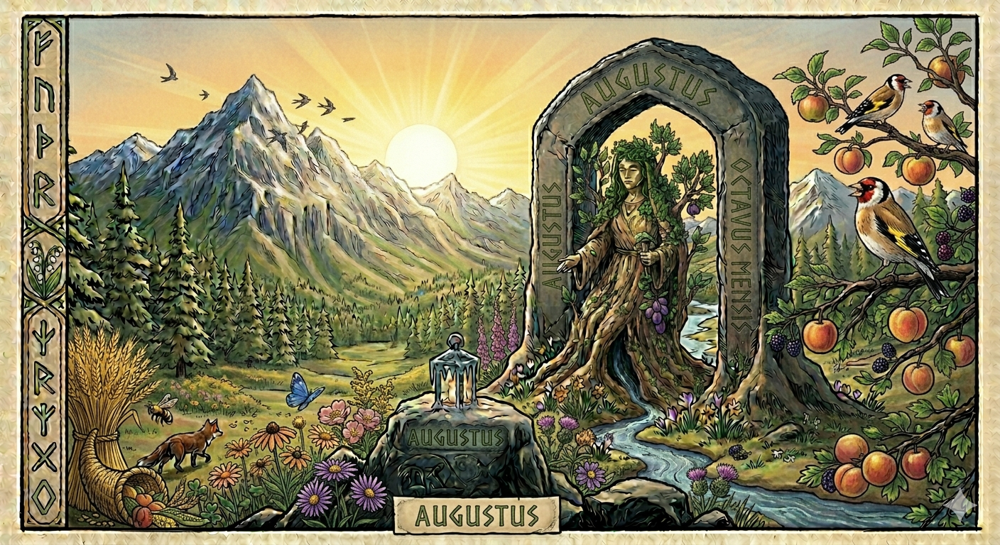
Palabra intraducible: skolestart
“Inicio de escuela”. El 20 de agosto (aproximadamente) marca el inicio del curso escolar en toda Noruega. Es un acontecimiento social: los niños de primer año llegan al colegio acompañados de toda la familia, vestidos con su mejor ropa, y reciben una bolsa con regalos. Los institutos organizan una fadderuke (“semana de padrinos”), donde los alumnos mayores acogen a los nuevos. El skolestart es, en muchos sentidos, el verdadero “año nuevo” cultural noruego.
Tradición: bærtur. Excursiones para recoger bayas silvestres — arándanos (blåbær), moras de pantano (molter), frambuesas silvestres (bringebær). En Noruega rige el allemannsretten (derecho de todos), una ley que permite caminar y recoger bayas y setas en cualquier terreno, también privado, mientras no se molesten cultivos.
Vocabulario del mes:
- skole — escuela
- å lære — aprender
- å begynne — empezar
- blåbær — arándanos (literalmente “bayas azules”)
- skog — bosque
💡 Skole / school y blåbær / blueberry — la lógica de formar palabras compuestas con colores y conceptos es idéntica en noruego e inglés.
September — Septiembre
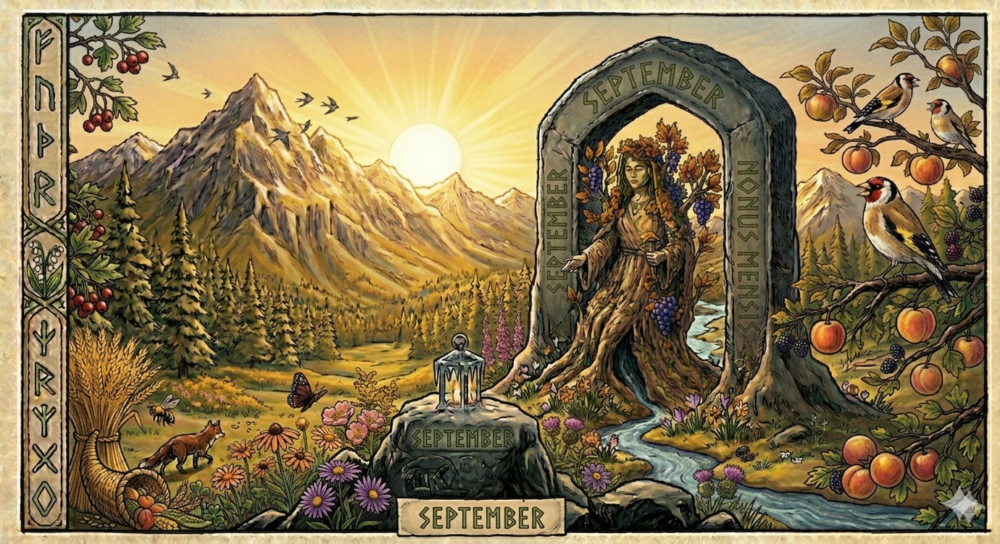
Palabra intraducible: gulhost
“Otoño amarillo”. Septiembre es cuando los bosques de Noruega se incendian de color: amarillos, naranjas y rojos cubren las montañas, especialmente en el este (Trøndelag, Telemark). Hay una palabra específica para esa explosión cromática, høstfarger (“colores de otoño”), y otra para la luz baja y cálida del atardecer otoñal, gylden time (“hora dorada”). Los noruegos viajan a propósito para verlo.
Tradición: soppjakt (“caza de setas”). Septiembre es la mejor época para recoger setas, una actividad muy seria: hay cursos certificados de identificación, asociaciones micológicas locales y un día anual (soppdagen, “día de las setas”) donde se pueden llevar las setas a un control gratuito.
Vocabulario del mes:
- høst — otoño
- blad — hoja (también “revista”)
- å falle — caer
- gul — amarillo
- sopp — seta
💡 Høst (otoño) no tiene cognado evidente en inglés moderno (que usa autumn del latín o fall del verbo “caer”), pero en alemán es Herbst. Blad / leaf tampoco se parecen, pero blad / blade (hoja de cuchillo) sí.
Oktober — Octubre
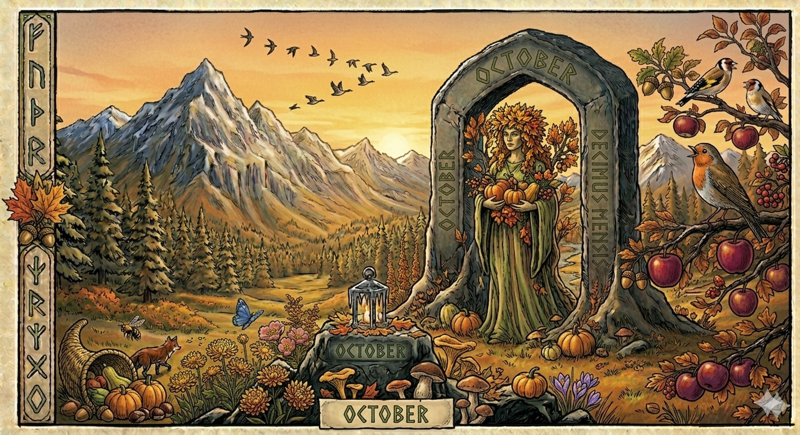
Palabra intraducible: mørkningstid
“Tiempo del oscurecer”. A diferencia de mørketid (que es el período en que el sol literalmente no sale), mørkningstid es la fase de transición: los días se acortan rápidamente, las tardes se vuelven oscuras a las 16:00, y la gente empieza a refugiarse en casa. Es psicológicamente el mes más duro del año en Noruega — más que diciembre, porque diciembre tiene la Navidad como compensación.
Tradición: levende lys, “velas encendidas”. A partir de octubre, casi todos los hogares noruegos tienen velas encendidas durante la tarde, sobre la mesa al cenar, en el alféizar de las ventanas. No es un detalle estético: es estrategia psicológica colectiva para sobrevivir a la falta de luz natural.
Vocabulario del mes:
- mørk — oscuro
- lys — vela, también luz
- regn — lluvia
- paraply — paraguas (préstamo del francés, igual que en español)
- jakke — chaqueta
💡 Mørk / murky, regn / rain, jakke / jacket — todos cognados germánicos directos.
November — Noviembre
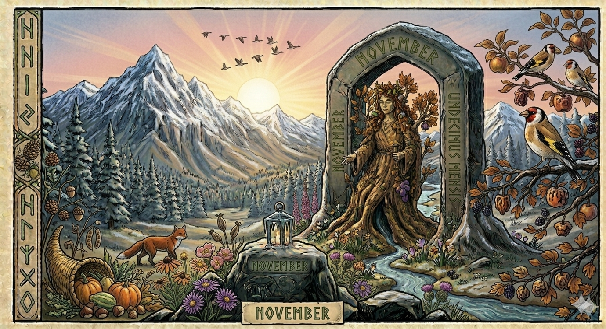
Palabra intraducible: grøtfest
“Fiesta de gachas”. A finales de noviembre y durante diciembre, muchas escuelas, oficinas y comunidades vecinales organizan grøtfester: reuniones donde se come risengrynsgrøt (gachas de arroz dulce) caliente, acompañada de canela, azúcar y mantequilla derretida. En una de las gachas se esconde una almendra: el que la encuentra gana un pequeño premio. La tradición viene de la antigua creencia de que había que dejar gachas para el fjøsnisse (el duendecillo del granero) para que protegiera la casa durante el invierno.
Tradición: encendido de luces de Navidad en los centros urbanos. Oslo enciende su árbol gigante en el ayuntamiento a finales de noviembre — un árbol que, por tradición desde 1947, regala Noruega a Londres cada año en agradecimiento por la ayuda durante la Segunda Guerra Mundial (es el que se monta en Trafalgar Square).
Vocabulario del mes:
- grøt — gachas
- kanel — canela
- smør — mantequilla
- å varme — calentar
- å vente — esperar
💡 Smør es prima de smear (untar) en inglés. Kanel / cinnamon — esta cuesta más, porque cinnamon viene del griego y kanel del francés cannelle.
Desember — Diciembre
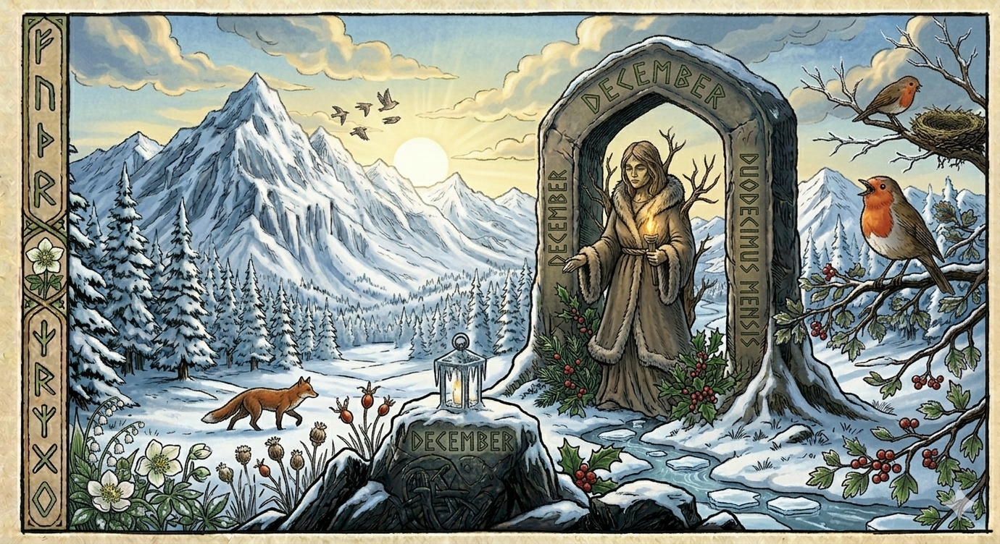
Palabra intraducible: koselig
Probablemente la palabra noruega más famosa fuera de Noruega. Koselig significa “acogedor”, “cálido”, “agradable”, pero ninguna de esas traducciones captura el matiz completo. Es la cualidad de estar a gusto, en casa, con velas encendidas, gente querida, manta y algo caliente para beber, mientras fuera nieva o llueve. El equivalente sueco es mysigt, el danés hyggeligt, y los tres expresan lo mismo: una forma cultural de plantarle cara al invierno largo desde la intimidad doméstica.
Tradición: jul, la Navidad noruega, larga y rara. Empieza el 13 de diciembre con Lucia (una procesión de niñas con coronas de velas, tradición de origen sueco) y se extiende hasta el 6 de enero. La cena principal es la julemiddag del 24 de diciembre, no del 25. Plato estrella: ribbe (panza de cerdo asada al horno) o pinnekjøtt (costillas de cordero saladas y curadas). Y muchas familias siguen dejando un cuenco de risengrynsgrøt para el fjøsnisse. Si no lo dejas, dice la leyenda, te gasta bromas todo el año.
Vocabulario del mes:
- jul — Navidad
- gave — regalo
- å gi — dar
- julenisse — Papá Noel (literalmente “duende de Navidad”)
- fred — paz
💡 Gi es uno de los verbos más cortos del noruego, y prima directa del inglés give. Jul es la misma raíz que el inglés yule — antigua palabra germánica para la festividad del solsticio de invierno, anterior al cristianismo.
Glosario completo
Todas las palabras noruegas que han aparecido en este anexo, en orden alfabético:
| Noruego | Español |
|---|---|
| appelsin | naranja |
| å bade | bañarse |
| bål | hoguera |
| blad | hoja, revista |
| blåbær | arándano |
| bok | libro |
| bolle | bollo |
| å begynne | empezar |
| bunad | traje tradicional regional |
| bær | bayas |
| båt | barco |
| å falle | caer |
| fellesferie | vacaciones colectivas |
| ferie | vacaciones |
| fjell | montaña |
| flagg | bandera |
| fred | paz |
| å gi | dar |
| gulhost | otoño amarillo |
| å gå på ski | esquiar |
| å gå tur | pasear |
| gave | regalo |
| grilling | barbacoa |
| grøt | gachas |
| gul | amarillo |
| hytte | cabaña |
| hyttekos | bienestar en la cabaña |
| høst | otoño |
| iskrem | helado |
| jakke | chaqueta |
| jul | Navidad |
| julenisse | Papá Noel |
| kaldt | frío |
| kanel | canela |
| koselig | acogedor, cálido |
| kvikklunsj | chocolate típico de Pascua |
| lys | luz, vela |
| å lære | aprender |
| å lese | leer |
| midnattsol | sol de medianoche |
| mørk | oscuro |
| mørketid | temporada oscura |
| mørkningstid | tiempo del oscurecer |
| nyttår | año nuevo |
| nyttårsforsetter | propósitos de año nuevo |
| paraply | paraguas |
| peis | chimenea |
| pølse | salchicha, perrito caliente |
| påske | Pascua |
| påskekrim | novelas/series policiacas de Pascua |
| regn | lluvia |
| sein kveld | atardecer tardío |
| sankthansaften | noche de san juan |
| skog | bosque |
| skole | escuela |
| skolestart | inicio del curso escolar |
| snø | nieve |
| sol | sol |
| sommer | verano |
| sopp | seta |
| soppjakt | recogida de setas |
| å spise | comer |
| strand | playa |
| smør | mantequilla |
| tog | tren, desfile |
| vann | agua, lago |
| å varme | calentar |
| å vente | esperar |
| vinter | invierno |
| vår | primavera |
| vårtegn | señales de primavera |
Sobre este anexo
Este EPUB forma parte del curso Velkommen til Norge!, un microcurso autoformativo de noruego bokmål (nivel A0 → A1) dirigido a hispanohablantes adolescentes con interés en la cultura nórdica.
Está pensado como complemento a la Lección 2 — Tall og tid. El cuestionario QTI de esa lección evalúa el dominio léxico de números, días y meses; este anexo lo amplía a la dimensión cultural.
Autora: Noelia Oviedo Marín Curso: Máster en Letras Digitales 2025-2026 Asignatura: Producción de Materiales Educativos Digitales Licencia: Creative Commons BY-NC-SA 4.0
Fuentes principales:
- Visit Norway (oficina oficial de turismo). Información sobre festividades y tradiciones.
- NDLA (Nasjonal digital læringsarena). Recursos educativos oficiales.
- Norsk Polarinstitutt (Instituto Polar Noruego). Datos sobre mørketid y midnattsol.
- Språkrådet (Consejo de la Lengua Noruega). Vocabulario y ortografía.